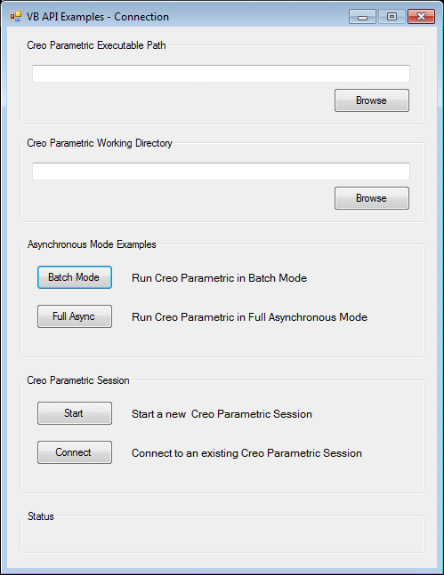
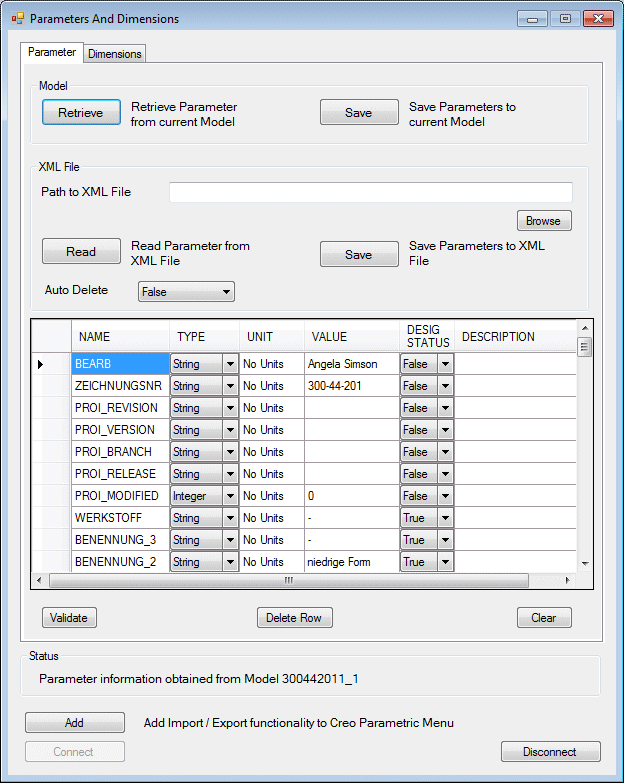

|
Location
|
Main Classes
|
|---|---|
|
<creo_vbapi_loadpoint>/vbapi_examples
|
formConnection and formExamples
|
| 1. | Set the PRO_COMM_MSG_EXE environment variable to the full path of the executable pro_comm_msg.exe for your application to communicate with Creo Parametric. Typically, the path to the executable is <creo_loadpoint>\<version>\Common Files\<machine type>\obj\pro_comm_msg.exe, where machine_type is i486_nt for 32-bit Windows and x86_win64 for 64-bit Windows installations. |
| 2. | Register the COM server by running the vb_api_register.bat file located at <creo_loadpoint>/Parametric/bin. |
| 3. | Unzip the VBAPIExamples.zip file in a local folder on your machine and open the VB API Examples.sln solution in Microsoft Visual Studio. |
| 4. | Set the COM reference for your project to Creo Parametric VB API Type Library for Creo Parametric. |
| 5. | Build the solution and execute the VB API Examples.exe created in your local folder. The VB API Examples - Connection form as shown in the following figure is loaded. 
|
| 6. | Click Start to start a new Creo Parametric session in the simple asynchronous mode. You must specify the Creo Parametric working directory and executable path before attempting to start a new session. You can also connect to an existing session in the simple asynchronous mode by clicking Connect. Click Batch Mode to start a new Creo Parametric session in the batch mode, or click Full Async to start a new Creo Parametric session in the full asynchronous mode. Refer to the section Asynchronous ModeVB API Fundamentals:Controlling Creo Parametric for more information on the modes of communication. |
| 7. | Once you are connected to a Creo Parametric session, the VB API Examples form is loaded. You can execute all the examples available in the vbapi_examples directory from this form. |
|
Location
|
Main Class
|
|---|---|
|
<creo_vbapi_loadpoint>/vbapi_appls/vbparam
|
FormPD
|
| 1. | Set the PRO_COMM_MSG_EXE environment variable to the full path of the executable pro_comm_msg.exe for your application to communicate with Creo Parametric. Typically, the path to the executable is <creo_loadpoint>\<version>\Common Files\<machine type>\obj\pro_comm_msg.exe, where machine_type is i486_nt for 32-bit Windows and x86_win64 for 64-bit Windows installations. |
| 2. | Register the COM server by running the vb_api_register.bat file located at <creo_loadpoint>/Parametric/bin |
| 3. | Unzip the VBParam.zip file in a local folder on your machine and open the ParameterAndDimension.sln solution in Microsoft Visual Studio. |
| 4. | Set the COM reference for your project toCreo Parametric VB API Type Library forCreo Parametric. |
| 5. | Build the solution and execute the ParameterAndDimension.exe created in your local folder. The Parameters and Dimensions form is loaded. |
| 6. | Start Creo Parametric and open a PART model containing parameters and dimensions. |
| 7. | Click the Connect button in the form to connect to the active Creo Parametric session in the simple asynchronous mode. Click the Add button to connect in the full asynchronous mode, wherein a new PDMenu menu gets added to the menubar in the Creo Parametric user interface. You can perform the same set of operations on parameters and dimensions from the Parameters and Dimensions form in the simple asynchronous mode and from the PDMenu menu in the full asynchronous mode.
|
| 8. | Click Disconnect to disconnect from the current Creo Parametric session. |
| • | Retrieve all the parameters of a PART model in the current Creo Parametric session inside the parameter table in the Parameters and Dimensions form. |
| • | Modify the unit, value, designated status, and description, except name and type for each parameter. |
| • | Delete a parameter and all the values associated with it. |
| • | Save the updated list of parameters back in the model. |
| • | Save the list of parameters retrieved from the model in an XML file, or read the parameters from a previously saved XML file in the form. |
| • | Retrieve all the dimensions of a PART model in the current Creo Parametric session inside the dimensions table in the Parameters and Dimensions form. |
| • | Modify the name, nominal value, tolerance type, tolerance value 1, and tolerance value 2, except ID and type for each dimension. |
| • | Save the updated list of dimensions back in the model. |
| • | Save the list of dimensions retrieved from the model in an XML file or read the dimensions from a previously saved XML file
in the form. The Parameters and Dimensions form containing the parameters retrieved from a PART model is shown in the following figure.

|